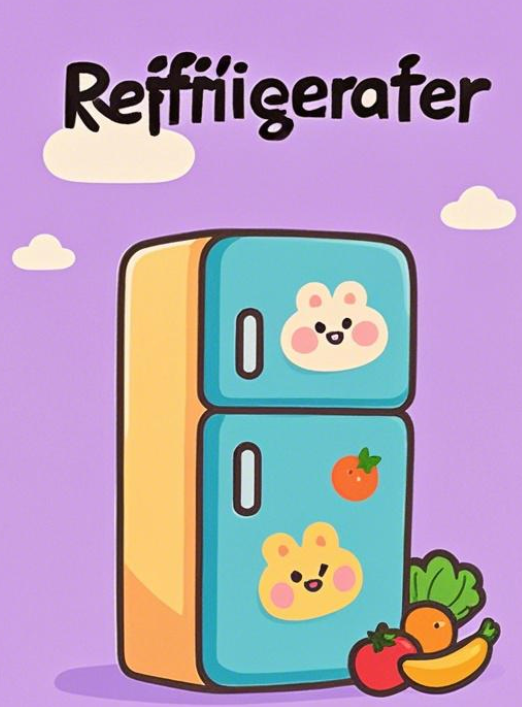

<!DOCTYPE lake>
<h1 data-lake-id="mIvN1" id="mIvN1"><span data-lake-id="u3c54b141" id="u3c54b141">0&gt; 功能需求</span></h1><p data-lake-id="ue1db5bc1" id="ue1db5bc1"><span data-lake-id="uafd98a4a" id="uafd98a4a">将打印"矩形"图案封装为函数</span></p><hr/><h1 data-lake-id="K67Wr" id="K67Wr"><span data-lake-id="u27554c27" id="u27554c27">1&gt; 程序设计</span></h1><span class="yuque-card-unsupported">[codeblock]</span><p data-lake-id="u5274bd95" id="u5274bd95"><span data-lake-id="u2954cb9c" id="u2954cb9c">优点：</span></p><p data-lake-id="uffa2b899" id="uffa2b899"><span data-lake-id="u022132dd" id="u022132dd">✅</span><span data-lake-id="u727089c9" id="u727089c9"> 主函数只需关注"做什么"（打印矩阵）</span></p><p data-lake-id="u33ed6f55" id="u33ed6f55"><span data-lake-id="u43705eb6" id="u43705eb6">✅</span><span data-lake-id="u66c6efb8" id="u66c6efb8"> 修改打印逻辑只需调整printStarMatrix函数</span></p><hr/><h1 data-lake-id="YTf1z" id="YTf1z"><span data-lake-id="ub80a79e6" id="ub80a79e6">🐻</span><span data-lake-id="u2c351b22" id="u2c351b22">实践练习：</span></h1><p data-lake-id="u47a91f4a" id="u47a91f4a"><span data-lake-id="uf3e5cb57" id="uf3e5cb57">练习 1&gt; 封装"打印三角形"图案程序;</span></p><p data-lake-id="u850f98a3" id="u850f98a3"><span data-lake-id="u46a8bd0c" id="u46a8bd0c">练习 2&gt; 封装"打印9x9乘法表"程序；</span></p><p data-lake-id="u15c1b342" id="u15c1b342"><span data-lake-id="u809accfd" id="u809accfd">练习 3&gt; 封装"判断数字位数"程序；</span></p><p data-lake-id="u91d1ea24" id="u91d1ea24"><br/></p><hr/><h1 data-lake-id="H8g4A" id="H8g4A"><span data-lake-id="u3615ba3b" id="u3615ba3b">🚀</span><span data-lake-id="uc4b01a66" id="uc4b01a66">扩展练习： </span></h1><p data-lake-id="u81a6a34d" id="u81a6a34d"><span data-lake-id="uffd6ca5f" id="uffd6ca5f">将学过的所有小功能函数封装, 例如，打印月份天数，圆的面积等等。</span></p><p data-lake-id="uf8038d0a" id="uf8038d0a"><span data-lake-id="u288f01bc" id="u288f01bc">​</span><br/></p><p data-lake-id="u4b7a0be3" id="u4b7a0be3"><span data-lake-id="ua38c5575" id="ua38c5575">封装函数就像我们家的空调，洗衣机，冰箱，每个都有特定的功能，</span></p><p data-lake-id="u8a566172" id="u8a566172"><span data-lake-id="uf03126a2" id="uf03126a2">我们只需要知道如何使用，不需要了解内部工作原理。</span></p><table class="lake-table" data-lake-id="Byxsa" id="Byxsa" margin="true" style="width: 711px" width-mode="contain"><colgroup><col width="336"/><col width="375"/></colgroup><tbody><tr data-lake-id="u3b6c96f3" id="u3b6c96f3"><td data-lake-id="uf8c009fd" id="uf8c009fd"><p data-lake-id="uaa86cbad" id="uaa86cbad"></p></td><td data-lake-id="u946cf982" id="u946cf982"><p data-lake-id="uf587c20f" id="uf587c20f"></p></td></tr><tr data-lake-id="ub98dd8c7" id="ub98dd8c7"><td data-lake-id="u2de0e381" id="u2de0e381"><p data-lake-id="uabd5900f" id="uabd5900f"></p></td><td data-lake-id="uac84885b" id="uac84885b"><p data-lake-id="u8503d762" id="u8503d762"></p></td></tr></tbody></table><p data-lake-id="uf44dc187" id="uf44dc187"><strong><span data-lake-id="u09bad57a" id="u09bad57a">拓展挑战题 </span></strong></p><p data-lake-id="u84f59be3" id="u84f59be3"><span data-lake-id="u87ede8a7" id="u87ede8a7">&gt; 数字彩蛋</span><span data-lake-id="u649960fd" id="u649960fd">🥚</span><span data-lake-id="ufe304e19" id="ufe304e19">游戏，要求如下：</span></p><blockquote data-lake-id="uf9b53d67" id="uf9b53d67"><ol list="u7d10e9b6"><li data-lake-id="u3a9cf3a7" fid="u5b1b98c5" id="u3a9cf3a7"><span data-lake-id="ue7d1f409" id="ue7d1f409">生成随机数(1000及以内)、用户猜数、给提示(大了，小了)</span></li><li data-lake-id="u2b921e9c" fid="u5b1b98c5" id="u2b921e9c"><span data-lake-id="ud7d82c0c" id="ud7d82c0c">给出结果：猜对了，你用了n次机会。</span></li><li data-lake-id="u7c8880fa" fid="u5b1b98c5" id="u7c8880fa"><span data-lake-id="uaabef8c5" id="uaabef8c5">主函数调用函数实现完整猜数字游戏</span></li><li data-lake-id="u22a2eb08" fid="u5b1b98c5" id="u22a2eb08"><span data-lake-id="u2a064b56" id="u2a064b56">限制用户猜的次数，超过次数后结束游戏。（可选）</span></li></ol></blockquote><p data-lake-id="u58754a3a" id="u58754a3a"><span data-lake-id="u8c19fc1a" id="u8c19fc1a">提示，使用如下代码可以生成[1, 1000]的随机数：</span></p><span class="yuque-card-unsupported">[codeblock]</span><p data-lake-id="u36ca2ee9" id="u36ca2ee9"><br/></p>